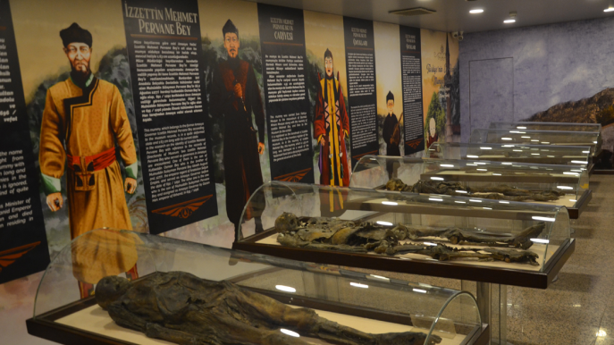

Mumyalar
Amasya Müzesi, Türkiye'nin Amasya ilinde yer alan ve zengin arkeolojik ve etnografik koleksiyonlarıyla dikkat çeken önemli bir müzedir. Müzenin en dikkat çekici koleksiyonlarından biri, İlhanlılar dönemine (13. yüzyıl) ait olan mumya koleksiyonudur. Bu mumyalar, Anadolu'nun bu dönemdeki kültürel ve tarihi zenginliklerini gözler önüne sermektedir. Müzedeki önemli mumyalardan biri Şehzade Cumudar'a aittir. İlhanlı hükümdarlarından birinin oğlu olan Şehzade Cumudar’ın mumyası, müzede sergilenen en bilinen ve önemli mumyalardan biridir. Bu mumya, dönemin mumyalama tekniklerinin ne kadar gelişmiş olduğunu göstermesi açısından büyük bir öneme sahiptir. Bir diğer dikkat çeken mumya ise İlhanlı Komutanı İzzettin Mehmet Pervane Bey’e aittir. İlhanlı döneminin önemli komutanlarından biri olan İzzettin Mehmet Pervane Bey’in mumyası, dönemin askeri liderlerinin nasıl gömüldüğü ve mumyalama işlemlerinin nasıl yapıldığı hakkında bilgi sunar. Müze, ayrıca İlhanlı döneminde yaşamış olan diğer asil ve soylu kişilerin mumyalarını da barındırmaktadır. Bu mumyalar, dönemin sosyal yapısını ve hiyerarşisini anlamamıza yardımcı olur. Amasya Müzesi'ndeki mumyalar, oldukça iyi korunmuş durumdadır. İlhanlı döneminde ölüleri mumyalama geleneği, oldukça gelişmiş bir teknikle uygulanmıştır ve bu durum mumyaların bugün bile iyi durumda olmasını sağlamıştır. Mumyalar, dönemin geleneksel kostümleri ve takıları ile gömülmüşlerdir. Bu da tarihçilere ve arkeologlara dönemin giyim tarzı ve sosyal yapısı hakkında önemli bilgiler sunmaktadır. Ayrıca mumyalarda, fiziksel özellikler ve hastalık izleri gibi ayrıntılar da korunmuştur. Bu durum, dönemin sağlık koşulları ve hastalıkları hakkında da bilgi verir. Amasya Müzesi'nde sergilenen mumyalar, yalnızca İlhanlı dönemi Anadolu’sunun sosyal, kültürel ve siyasi yapısını anlamak için değil, aynı zamanda mumyalama tekniklerinin gelişimini ve bu tekniklerin o dönemde nasıl uygulandığını görmek açısından da büyük bir önem taşır. Bu mumyalar, Türkiye'deki diğer müzelerdeki mumya koleksiyonlarına kıyasla oldukça özel ve nadirdir. Amasya'ya yolu düşen tarih ve arkeoloji meraklıları için müze, mutlaka görülmesi gereken yerler arasında bulunmaktadır. Müze, Amasya'nın tarihî zenginliğini ve Anadolu'nun çok kültürlü geçmişini gözler önüne seren önemli bir kültürel hazinedir.